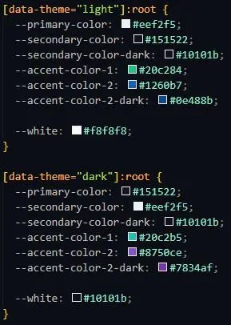
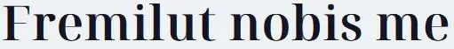
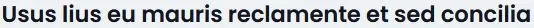
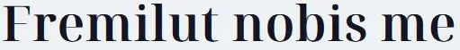
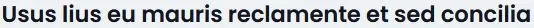

Visual details
Graphic elements

Colors used
Font 1
Font family: Noto Serif Display
Font 2
Font family: Poppins

Font family: Noto Serif Display
Font family: Poppins
This time, I decided to make a contrasting font pairing to make the headlines stand out more from the body text. Noto Serif Display is a serif font, which makes it suitable for use in large headlines.
My color palette is again generated from huemint.com and consists more of a cold color harmony. I have added a dark theme feature to the site as well, which also changes the accent colors in the color palette. I modified the button in the nav to a switch between light and dark theme.
I added subtle animations to make the content fade in, when it is in view. I used the Motion One library to achieve this effect. Though I wanted the content to animate in when it is in the middle of the viewport, instead of when the top of the container enters the viewport, I couldn't quite get that to work however.